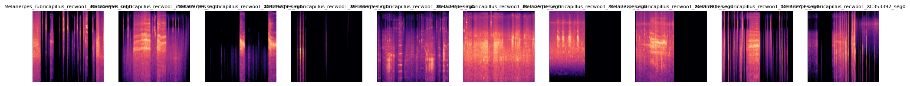
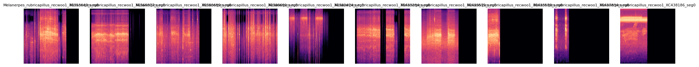
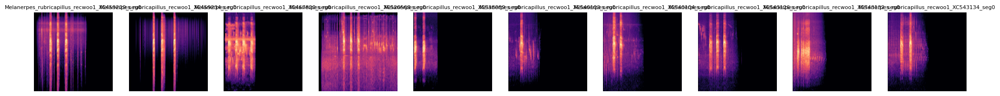
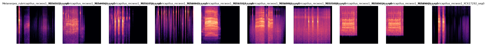
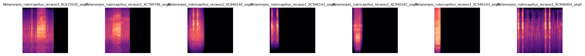

Generación de espectrogramas#
Este script implementa un pipeline robusto para convertir grabaciones de audio de longitud y calidad variables en un conjunto de datos uniforme de imágenes (Mel-espectrogramas), optimizadas para el entrenamiento de modelos de Deep Learning.
Librerías#
import pandas as pd
import librosa
import librosa.display
import matplotlib.pyplot as plt
import numpy as np
import os
from tqdm import tqdm
import pywt
from scipy.signal import butter, lfilter
import gc
Datos#
# Cargar el CSV
df = pd.read_csv('especies_colombia.csv')
ruta_base = 'birdclef-2025/train_audio/'
# Usamos un estándar de bioacústica para reducir el uso de memoria
SAMPLE_RATE = 32000
SEGMENT_LENGTH_SEC = 10
SEGMENT_SAMPLES = int(SEGMENT_LENGTH_SEC * SAMPLE_RATE)
Espectrogramas#
1. Funciones de Preprocesamiento de la señal#
El núcleo del preprocesamiento se centra en la limpieza y estandarización de la señal de audio cruda para mejorar la relación señal-ruido (SNR).
Filtro Pasa-Banda#
Se implementa un filtro Butterworth de quinto orden para aislar el rango de frecuencias de interés (1.5 kHz a 15 kHz).
Esta operación es fundamental para atenuar el ruido de baja frecuencia (ej. viento, zumbido de motores) y el ruido de muy alta frecuencia (ej. ruido electrónico, algunos insectos), que generalmente no contienen información relevante para la vocalización de la mayoría de las aves.
# Filtra el audio para mantener solo el rango donde vocalizan la mayoría de las especies.
def butter_bandpass_filter(data, lowcut, highcut, sr, order=5):
data = data.astype(np.float32)
if not np.isfinite(data).all() or len(data) == 0:
return None
nyq = 0.5 * sr
low = lowcut / nyq
high = highcut / nyq
b, a = butter(order, [low, high], btype='band')
y = lfilter(b, a, data)
return y.astype(np.float32)
Reducción de Ruido con Wavelets#
Se emplea un algoritmo de reducción de ruido (denoising) basado en la Transformada Wavelet Discreta (DWT). Este método descompone la señal en múltiples escalas de tiempo-frecuencia y aplica un umbral (thresholding) a los coeficientes que probablemente representan ruido no estacionario.
A diferencia de los filtros espectrales simples, este enfoque preserva mejor los transitorios y las características armónicas sutiles de las vocalizaciones.
La metodología se hereda directamente de la tesis de Carvalho Salazar [@carvalho2025reduccion], que valida experimentalmente el impacto positivo de la reducción de ruido con wavelets en el rendimiento de clasificadores de aves como BirdNET.
El estudio concluye que esta técnica mejora la claridad de la señal y reduce las tasas de falsas alarmas en entornos acústicamente complejos.
# Un método más avanzado que el 'noisereduce' estándar.
def wavelet_denoising(y, wavelet='db4', level=1):
y = y.astype(np.float32)
if np.sum(np.square(y)) < 1e-10:
return y
try:
coeff = pywt.wavedec(y, wavelet, mode="per")
sigma = (1/0.6745) * np.median(np.abs(coeff[-level]))
if sigma == 0:
return y
uthresh = sigma * np.sqrt(2 * np.log(len(y)))
coeff[1:] = (pywt.threshold(i, value=uthresh, mode='soft') for i in coeff[1:])
return pywt.waverec(coeff, wavelet, mode="per").astype(np.float32)
except Exception:
return y
2. Generación de Muestras y Extracción de Características#
Segmentación por Ventana Deslizante#
En lugar de analizar un solo fragmento, el script implementa una estrategia de ventana deslizante (sliding window) para extraer múltiples segmentos de 10 segundos con un 50% de solapamiento. Se utiliza librosa.stream para procesar los archivos de audio en bloques, evitando así errores de memoria (MemoryError) al no cargar archivos largos por completo. Un filtro basado en la energía del segmento descarta los fragmentos que consisten mayormente en silencio.
Esta técnica es fundamental y se describe en el artículo sobre el corpus de aves de Quindío [@novoa2025corpus].
Su doble propósito es:
Aumentar el volumen del dataset, al generar múltiples muestras de un solo archivo.
Estandarizar la dimensionalidad de la entrada para las redes neuronales.
def generar_segmentos(y, sr, duracion_seg=10, solapamiento=0.5):
longitud_seg_muestras = int(duracion_seg * sr)
paso = int(longitud_seg_muestras * (1 - solapamiento))
segmentos = []
if len(y) < longitud_seg_muestras:
padding = longitud_seg_muestras - len(y)
segmento_completo = np.pad(y, (0, padding), 'constant')
segmentos.append(segmento_completo)
return segmentos
for i in range(0, len(y) - longitud_seg_muestras, paso):
segmento = y[i:i + longitud_seg_muestras]
energia = np.sum(np.square(segmento))
if energia > 0.005:
segmentos.append(segmento)
return segmentos
Generación de Mel-Espectrogramas#
Esta es la función de extracción de características principal. Cada segmento de audio es transformado en un Mel-espectrograma, una representación visual 2D tiempo-frecuencia. La escala Mel es logarítmica y está diseñada para imitar la percepción auditiva humana, dando mayor resolución a las bajas frecuencias. Los espectrogramas son luego guardados como imágenes PNG.
El uso de Mel-espectrogramas como entrada para Redes Neuronales Convolucionales (CNN) es el enfoque estándar validado en toda la literatura de bioacústica moderna.
def generar_espectrograma_mel(y, sr, ruta_salida):
try:
S = librosa.feature.melspectrogram(y=y, sr=sr, n_mels=128, fmin=500, fmax=15000, n_fft=2048, hop_length=512)
S_db = librosa.power_to_db(S, ref=np.max)
if not np.isfinite(S_db).all():
print(f" [ADVERTENCIA] Espectrograma con valores no finitos. Saltando guardado de {os.path.basename(ruta_salida)}")
return
plt.figure(figsize=(3, 3))
librosa.display.specshow(S_db, sr=sr, x_axis='time', y_axis='mel', cmap='magma')
plt.axis('off')
plt.tight_layout(pad=0)
plt.savefig(ruta_salida, bbox_inches='tight', pad_inches=0)
finally:
plt.close('all')
3. Bucle Principal de Procesamiento#
Esta sección del script constituye el núcleo del pipeline de procesamiento y generación de datos. Su función es iterar sobre el conjunto de datos de audio, aplicar una serie de transformaciones robustas y eficientes, y generar los Mel-espectrogramas que servirán como entrada para los modelos de aprendizaje. El diseño del bucle está optimizado para manejar grandes volúmenes de datos y archivos de calidades variables.
os.makedirs('espectrogramas_mel_final', exist_ok=True)
metadata_espectrogramas = []
# Itera sobre cada registro de audio listado en el DataFrame principal.
for _, row in tqdm(df.iterrows(), total=len(df)):
archivo = row['filename']
ruta_audio = os.path.join(ruta_base, archivo)
try:
# Se obtiene la tasa de muestreo original sin cargar el archivo completo en memoria.
sr_original = librosa.get_samplerate(path=ruta_audio)
# Se calculan los tamaños de frame y salto en la tasa de muestreo original para que, después del remuestreo, los bloques correspondan a la duración deseada (10s).
frame_length_original = int(SEGMENT_LENGTH_SEC * sr_original)
hop_length_original = int(frame_length_original * 0.5)
# Procesamiento por Bloques (Streaming) para Eficiencia de Memoria
stream = librosa.stream(
ruta_audio,
block_length=256,
frame_length=frame_length_original,
hop_length=hop_length_original
)
segment_count = 0
for y_block in stream:
# 3. Remuestreo y Estandarización por Bloque
# Cada bloque se remuestrea a la tasa de muestreo objetivo (SAMPLE_RATE). Esto estandariza todos los datos de entrada y reduce la carga computacional.
y_resampled = librosa.resample(y=y_block.astype(np.float32), orig_sr=sr_original, target_sr=SAMPLE_RATE)
# 4. Verificación de Integridad y Normalización de Tamaño
if not np.isfinite(y_resampled).all() or len(y_resampled) == 0:
continue
# Se asegura que todos los segmentos tengan una longitud uniforme (SEGMENT_SAMPLES), rellenando con silencio los bloques más cortos (padding)
if len(y_resampled) < SEGMENT_SAMPLES:
y_resampled = np.pad(y_resampled, (0, SEGMENT_SAMPLES - len(y_resampled)), 'constant')
else:
y_resampled = y_resampled[:SEGMENT_SAMPLES]
# Pipeline de Limpieza de Señal
# Se aplica el filtro pasa-banda para aislar las frecuencias de interés.
y_filtered = butter_bandpass_filter(y_resampled, lowcut=1500, highcut=15000, sr=SAMPLE_RATE, order=5)
if y_filtered is None: continue
# Se aplica la reducción de ruido basada en wavelets.
y_denoised = wavelet_denoising(y_filtered)
# Filtrado por Energía
energia = np.sum(np.square(y_denoised))
if energia < 0.001: continue
# Generación y Guardado del Espectrograma
generar_espectrograma_mel(y_denoised, SAMPLE_RATE, ruta_img)
# Se almacena la metadata del nuevo espectrograma para su uso posterior.
metadata_espectrogramas.append({
'filename': nombre_img,
'scientific_name': row['scientific_name']
})
segment_count += 1
except Exception as e:
# Manejo robusto de errores para archivos corruptos o problemáticos.
print(f"Error fatal procesando {archivo}: {e}")
continue
# Gestión de Memoria
gc.collect()
# --- Guardado Final de Metadatos ---
df_metadata = pd.DataFrame(metadata_espectrogramas)
df_metadata.to_csv('metadata_espectrogramas_final.csv', index=False)
0%| | 0/5090 [00:00<?, ?it/s]
100%|██████████| 5090/5090 [2:16:21<00:00, 1.61s/it]
Visualización de espectrogramas#
import matplotlib.image as mpimg
def visualizar_espectrogramas_por_especie(nombre_cientifico, carpeta='espectrogramas_mel_final', por_pagina=10):
nombre_cientifico = nombre_cientifico.replace(' ', '_')
archivos = [f for f in os.listdir(carpeta) if f.startswith(nombre_cientifico) and f.endswith('.png')]
total = len(archivos)
print(f'Se encontraron {total} espectrogramas para {nombre_cientifico.replace("_", " ")}')
for i in range(0, total, por_pagina):
fig, axs = plt.subplots(1, min(por_pagina, total - i), figsize=(2 * por_pagina, 2))
for j, archivo in enumerate(archivos[i:i + por_pagina]):
ruta = os.path.join(carpeta, archivo)
img = mpimg.imread(ruta)
axs[j].imshow(img)
axs[j].axis('off')
axs[j].set_title(archivo.split('.')[0], fontsize=8)
plt.tight_layout()
plt.show()
visualizar_espectrogramas_por_especie('Melanerpes rubricapillus')
Se encontraron 47 espectrogramas para Melanerpes rubricapillus





La colección de Mel-espectrogramas generada para la especie Melanerpes rubricapillus sirve como una excelente validación visual de la robustez y efectividad del pipeline de preprocesamiento de audio implementado.
El análisis de estas imágenes demuestra que las funciones de limpieza de señal y extracción de características operan correctamente, produciendo un conjunto de datos estandarizado y de alta calidad, listo para el entrenamiento de modelos de aprendizaje profundo.
Puntos Técnicos Destacados#
Efectividad de la Reducción de Ruido
Se observa una notable claridad en la mayoría de los espectrogramas, donde las vocalizaciones (las formas brillantes) contrastan fuertemente con un fondo oscuro y limpio.
Esto demuestra el éxito del pipeline de preprocesamiento de dos etapas:
El filtro pasa-banda ha eliminado eficazmente el ruido de baja frecuencia.
La técnica de reducción de ruido con wavelets ha suprimido el ruido no estacionario sin degradar significativamente la señal de interés.
El resultado son características más definidas, lo que reduce la ambigüedad para el modelo de clasificación.
Preservación de Características Acústicas Clave
A pesar del agresivo proceso de limpieza, las firmas acústicas fundamentales de la especie se han preservado con alta fidelidad.
Los patrones rítmicos de pulsos verticales, característicos del “tamborileo” de esta especie, son nítidos y bien definidos.
Esto valida que la metodología de denoising es lo suficientemente sofisticada para distinguir entre el ruido y la señal útil, un concepto clave heredado de la literatura.
Estandarización de la Entrada
Todas las imágenes presentan una dimensión y escala uniformes.
Esto es el resultado directo de:
La implementación de una ventana deslizante que segmenta el audio en fragmentos de 10 segundos.
La aplicación consistente de los parámetros de
librosa.feature.melspectrogram.
Esta estandarización es un requisito indispensable para el entrenamiento de redes neuronales, que requieren tensores de entrada de tamaño fijo.
Captura de la Variabilidad Natural
La colección de espectrogramas no es monótona; muestra una variabilidad natural en la intensidad, el espaciado y la duración de los pulsos entre diferentes segmentos.
Esto es positivo, ya que indica que el pipeline no está sobre-procesando el audio hasta eliminar las variaciones individuales.
Al capturar esta diversidad, se construye un conjunto de datos más rico y representativo, lo que es crucial para entrenar un modelo que pueda generalizar a nuevas grabaciones no vistas.
Los espectrogramas de Melanerpes rubricapillus no solo representan las vocalizaciones de la especie, sino que también actúan como una prueba tangible de que el pipeline de generación de datos es robusto, eficiente y está correctamente alineado con las mejores prácticas de la bioacústica computacional.